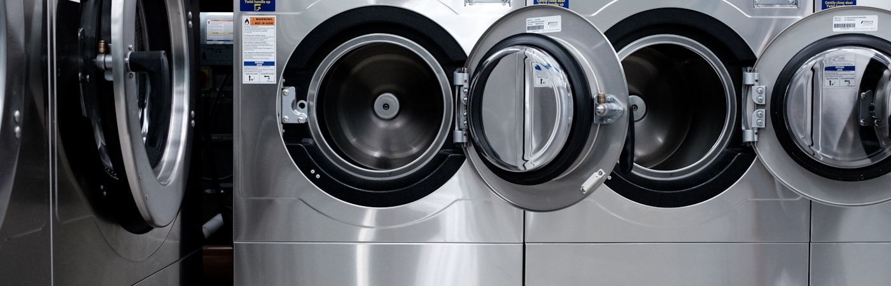
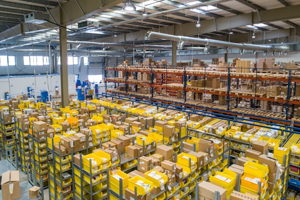
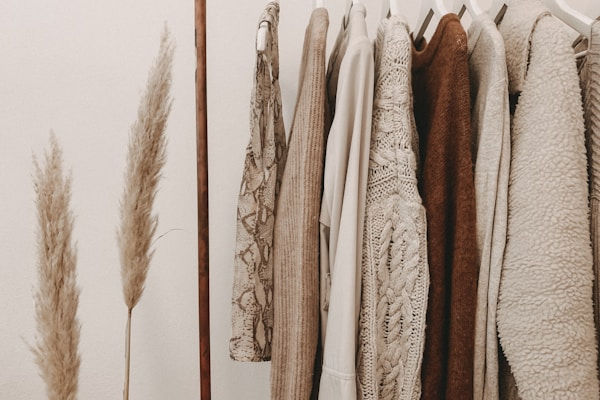

Our Products & Services
From everyday wash and fold to delicate dry cleaning — we've got your laundry covered.
Drop-Off Laundry

Prefer to come to us? Our drop-off service is available Monday to Saturday, 7:00 AM – 6:00 PM. Simply bring your laundry to our facility at 12 Clean Street, Johannesburg, and we'll have it ready for you within the same day (for orders dropped before noon) or by the following morning.
What's included:
- Sorting by colour and fabric type
- Wash, rinse, and tumble dry
- Neatly folded and packaged in a reusable bag
- Optional ironing at an additional cost per item
Minimum order: 3 kg
Price: From R30/kg
Pickup & Delivery

Our most popular service. Book a collection time online, and one of our friendly drivers will come to your home or office to collect your laundry. We return it clean, folded, and neatly packaged — usually within 24 hours.
How it works:
- Book your collection online or via WhatsApp.
- Place your laundry in a bag and leave it at your door at the agreed time.
- We collect, wash, dry, fold, and deliver.
- Pay online or on delivery.
Service areas:
- Johannesburg (all suburbs)
- Sandton and Midrand
- East Rand (Boksburg, Benoni, Germiston)
- Pretoria Central and surrounds
Delivery fee: Free on orders over R200. R50 flat fee for smaller orders.
Ironing & Folding

Whether it's work shirts, school uniforms, or formal wear — our ironing and folding service ensures every item is returned looking sharp and professional. We use commercial-grade steam irons and take care with delicate fabrics.
We iron and fold:
- Shirts and blouses
- Trousers and chinos
- School uniforms
- Dresses and skirts
- Bedsheets, duvet covers, and pillowcases
- Table linen and napkins
Pricing: From R15 per item. See full pricing →
This service can be added to any wash order or booked as a standalone service.
Dry Cleaning

Some garments require specialist care that regular washing can't provide. Our dry cleaning service uses professional-grade solvents and techniques to clean delicate, structured, and high-value items without damaging the fabric or shape.
Items we dry clean:
- Suits and blazers
- Evening gowns and formal dresses
- Leather and suede jackets
- Silk, chiffon, and other delicate fabrics
- Wedding dresses and bridalwear
- Wool and cashmere coats
- Curtains and upholstery items
Turnaround: 48 hours standard. Express 24-hour available on request.
Pricing: From R80 per item. See full pricing →
Meet the Team
Our team is made up of dedicated, trained professionals who take pride in their work. Every person at FreshFold shares our commitment to quality and customer care.
-
Nomsa Dlamini
Co-Founder & CEO
Nomsa oversees all operations and customer experience. With a background in business management and a lifelong passion for community upliftment, she is the driving force behind FreshFold's growth.
-
Thabo Dlamini
Co-Founder & Operations Manager
Thabo manages the day-to-day facility operations, logistics, and team training. His attention to detail and process-driven mindset ensures every order meets FreshFold's quality standards.
-
Zanele Mokoena
Head Laundry Technician
With eight years of professional laundry experience, Zanele leads our cleaning team. She is the expert our staff turn to for advice on tricky fabrics, stubborn stains, and specialist garments.
-
Sipho Khumalo
Delivery & Logistics Coordinator
Sipho coordinates all our pickups and deliveries, making sure every order reaches the right customer at the right time. He manages our fleet of drivers across all service zones.
-
Amahle Nkosi
Customer Service Representative
Amahle is the first voice customers hear when they call or WhatsApp FreshFold. She handles bookings, queries, complaints, and feedback with warmth and professionalism.